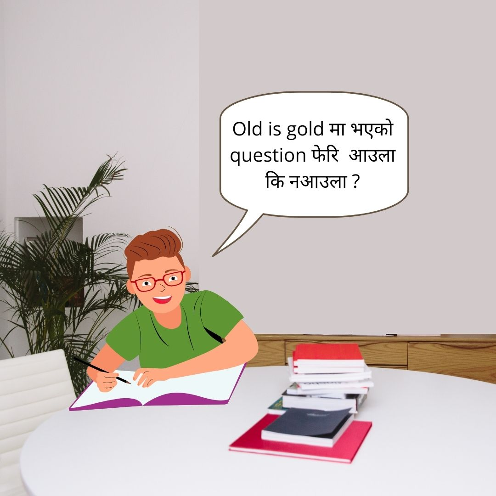

The Myths and The Tips
Living as a class 12 student in Nepal comes along with a big academic burden and pressure. Exams have been developed into a do or die pressure giving event which makes every student go through a lot of stress and anxiety. The stress caused by exams may be internal or board, and this has caused major unseen mental health issues. The time that the students could have used in having a focused preparation goes wasted in worrying about the exams. And this worry ultimately gets reflected at the time of exams. Especially class 12, which is often said to define a student’s career and bright possibility in future has been taken as a big burden. And it’s mostly due to the common phrase of words we commonly hear. And here are some of the common ways to overcome it.
1. अब पढ्छु
More than any other technique, the key to performing well on exams is starting early and using short frequent study sessions. The human brain learns academic material faster and better on an exam if done in brief blocks of time spread out over longer periods of time, rather than a few lengthy sessions. Thus, a week is enough for you to read and revise. Start with what you feel is easy, focus more on core materials, use visual cues for easy memorization, revise whatever you have read, and have faith on yourself.
2. फलानोको छोराछोरी
First thing, aaru ko neither xora nor xori matters. Take it normally, Asian parents usually say that, even if you tried to convince them, they won’t agree. So, don’t waste time arguing with them on this matter. Your parents expect you to keep your scale up because they know you are capable of it. Understand they want to be proud parents. Just listen and get back to your work. And always keep in mind that your parents will be with you no matter whether you score well or not.
3. Grades doesn't matter
Yes, skill chainxa,tara ramro grades ni chainxa, because grades can help you when skills can’t. For example, in getting good scholarships, getting you in nice university, sometimes getting jobs as well. So, there is no harm in getting good grades. And remember, that the skill will help you when grades can’t. For example, getting into a coding or programming challenge, or pitching somebody for your business plan.
4. That गफाडी friend
Your focus shouldn't be on HOW LONG you studied but on HOW MUCH you studied. It’s okay even if you studied only 2hours. But make sure you study with full concentration. Taking 5 mins break after every 25 mins can be effective, please check if that helps you. Everybody has that one friend who talks about how s/he has been studying for 20 hours. It is not the duration that matters. It is the quality. If you finish the same number of chapters in a shorter period of time, you are the winner.

5. Aaja ta cheat leera janxu

Please don’t do that. Please!! I know you will be able to hide the cheat somewhere and take it inside the exam hall but please don’t. It gives you only stress, nothing more than that. You will be worried if someone catches you and that will be the reason why you can't concentrate properly. And it's obvious that only your cheats can’t help you get good grades. So, taking cheats to the exam hall is the worst thing that you could do.
6. याद नै हुँदैन
You don’t need to memorize it all, you just need to know the marking scheme and know Kati leekhye kati aauxa, practice that way. And make sure, you revise whatever you studied at the end of the day. Everybody student feels like they don’t know anything. Maybe that’s because of fear. this is just a mind game. You have to inculcate this habit of being confident and calm. You’ll surely remember more than what you expected.
7. Time नै छैन
The only way to get out of this situation is to skip and read most of the things you can, because even if you may not be able to learn everything but you should at least know what is it and why is it here. So read things and don't try to cram up things as you may end up remembering nothing. The most important things is to be calm and try to understand the situation and work accordingly. Planning is the most important thing to do, plan your time and then start your preparation. Believe in yourself, that very important !!
8. Entrance exam धेरै important छ
Juggling between board exams and competitive exams is not an easy task and the difficulty level of the two sets of exams varies. There is a need to balance preparation for both and handle the pressure and anxiety that students experience from them. And usually, the entrance exam begins some months later than the board exam. So, you will have time to focus on the entrance exam. For now, keep studying for board exams.

9. सबै सक्छु
No need for that. You don’t need to complete everything in your coursebook. Check past year question pattern, there might be plenty of optional questions, and you can get A+ even if you skipped some chapters. Just be familiar with question patterns and you can skip those chapters which you feel are hard. But don’t neglect chapters that you feel easy. Keep revising them.
10. Old is gold is really a gold
There is a high chance of repetitive questions. Observe wisely, you will find out there are some questions that have been repetitively asked in the board exam. There is a high probability of that question being repeated this time as well. It’s guaranteed that you would get good grades if you practiced all the questions from the old is gold book.
11. 10 min त हो नि

Avoid social media during exam periods if you can. Your 10 minutes become 20 minutes and eventually become 2 hours and you won’t realize how fast time has elapsed. And after spending tons of time there, you will feel guilty, which is not good during preparation time.
Lastly, always have faith in yourself. Believe that you will do great. It’s just like when you were in grade 10, the SEE exam was supposed to be hard right? But was it really hard? It’s the same case in +2 examinations as well. Surely, you have attended more than 300 exams till you have reached grade 12. And this board exams will also go like that. Take it as a part of life. Wishing you all the very best for your exams.
- Written on- May 22,2022